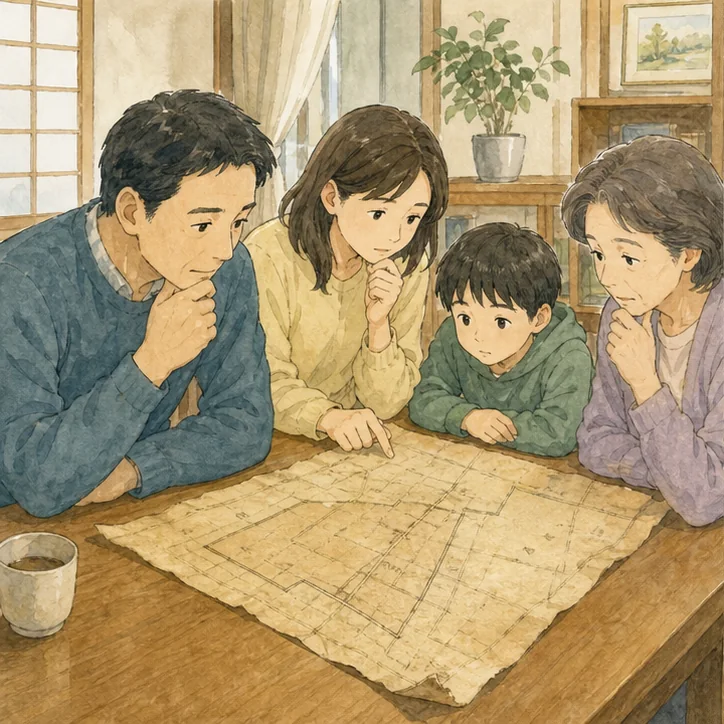
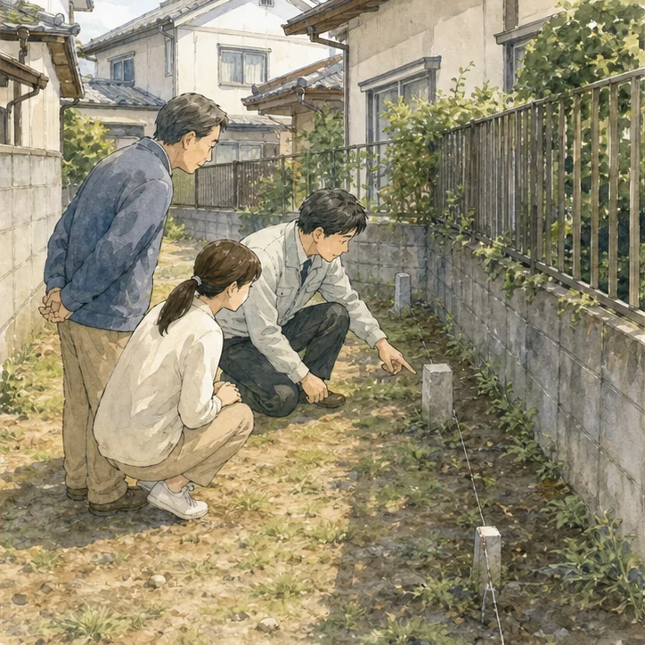
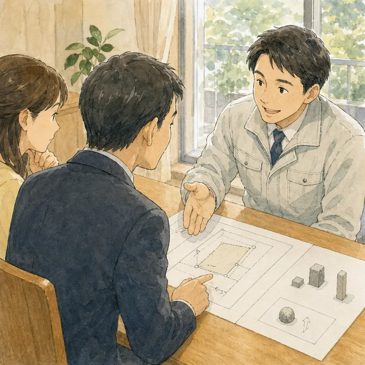

ご相談のきっかけ
法務局で公図は取得できましたが、地積測量図は保管されていませんでした。家族は境界が分からなければ必ず高額な測量が必要だと思い、相談をためらっていました。
この事例で大切なのは、ひとつの資料や誰かの記憶だけで結論を出さないことです。実家の問題は、登記上の権利、税金、建築や道路の条件、現地の状態、家族の希望が重なって見えにくくなります。そこで私たちは、分かっている事実、推測、未確認事項、専門家へ質問する事項を別々に記録します。測量図が見つからない実家についても、「たぶん大丈夫」「昔からこうだった」という言葉を確認済みの事実として扱わないことが、後のトラブルを減らします。
公図、地積測量図、現地の境界標、過去の確定測量図は役割が異なります。測量図がないことだけで直ちに売却不能とは限りませんが、面積や境界をどこまで明確にする必要があるかは取引条件で変わります。そのため、最初の打合せでは「いつ売れるか」「いくらになるか」を先に決めず、判断の前提となる資料をそろえることにしました。急いで動く必要がある項目と、家族で時間をかけてよい項目も分けます。
確認の順番は、まず物件を特定し、次に誰の不動産かを確かめ、権利や法令上の条件を調べ、最後に現地の状態を見る流れが基本です。順番を逆にして片付けや査定から始めると、処分してはいけない書類を捨てたり、売却できる人が決まっていないまま費用を使ったりすることがあります。調査で問題が見つかること自体は失敗ではありません。早い段階で見つけ、誰に何を確認するかが分かることが成果です。
とくに測量図が見つからない実家では、問題が一つだけに見えても、名義、道路、境界、建物、家財、管理など別の論点が隠れていることがあります。ひとつを解決したあとに次の問題が見つかると、家族は「また止まった」と疲れてしまいます。最初に全体を薄く広く確認し、優先順位をつける方が現実的です。
今回、私たちがご家族と一緒に最初に探した資料は、公図、登記事項証明書、地積測量図の有無、建物図面、過去の売買契約書、境界確認書、隣地所有者との覚書、固定資産税資料、航空写真です。全てそろっていなくても相談は始められます。ある物、ない物、存在が分からない物に分けるだけで、次に取得する資料が見えてきます。
古い実家では、書類が仏壇、たんす、金庫、押し入れ、銀行の貸金庫、親族宅などへ分散していることがあります。封筒から書類だけを抜くと、送付元や日付が分からなくなるため、確認が終わるまでは封筒ごと保管します。原本は無理に書き込まず、家族共有用には写真や写しを使います。
固定資産税通知書は有力な入口ですが、それだけで所有権や境界を証明するものではありません。課税される人と登記名義人が違う場合、非課税の土地が載らない場合、建物の表示が現況と異なる場合があります。別の資料と照合する前提で扱います。
私たちが資料で確認したこと
登記面積、公図の形状、周辺土地との位置関係を確認しました。過去に分筆された土地か、近隣筆には測量図があるか、道路資料と整合するかも見ました。
私たちは、法務局や自治体などから得られる公開情報を使って資料を確認します。ただし、資料には作成時点、目的、精度の違いがあります。公図の線をそのまま現地境界と考えたり、地図上の道路幅から建築判断をしたりせず、「資料から分かること」と「現地または行政確認が必要なこと」を明確に分けます。
私たちは確認結果を、問題あり・問題なしの二択ではなく、確認済み、追加資料が必要、現地確認が必要、専門家判断が必要、家族で決めること、という区分で整理しました。色だけに頼らず言葉でも状態を示すことで、遠方の家族にも誤解なく共有できます。

境界杭、鋲、石標、塀、側溝、擁壁、生け垣を確認しました。目印があっても正式な境界標とは限らず、隣地との合意を示すものかは別途確認が必要です。
現地確認では、敷地の外から分かること、所有者の許可を得て敷地内で確認すること、建物内部で確認することを分けます。隣地へ無断で入ったり、設備を勝手に動かしたりしません。危険がある場所は専門業者へ任せ、目視だけで安全や性能を保証しないようにします。
写真は「問題のある場所だけ」を撮るのではなく、建物四方向、道路、玄関、各室、設備、庭、境界付近を一定の順番で撮影します。全体写真と近接写真を組み合わせると、後から場所を特定しやすくなります。撮影日と確認者も残します。
家族へ、資料不足の程度と取引で求められる精度を説明しました。「測量する・しない」だけでなく、いつ、何のために、どの範囲を測るかを決めました。
家族会議では、最初に各人の希望を聞いたあと、希望を実現する条件へ言い換えます。「残したい」なら、誰が使い、誰が管理し、年間いくらまで負担できるか。「売りたい」なら、いつまでに、どの条件を解消し、家財や思い出をどう残すかを具体化します。
会議の記録は、決定事項だけでなく、保留理由、次の担当者、期限、必要資料を残します。欠席者へ口頭で伝えるだけでは認識がずれるため、同じ資料を共有します。一度で結論が出ない場合も、次回までに確かめることが決まれば前進です。
測量図が見つからない実家について、ここまでに確認したのは、物件を特定する資料、権利関係、家族が把握する経緯、現地の管理状態です。この段階ではまだ売却価格を決めていません。先に確認順を整えることで、不要な費用や家族間の誤解を減らします。
ふじがおか実家カルテは、価格を出す査定書ではありません。売る、残す、貸す、解体するという結論を誘導せず、その前に必要な確認を並べます。相談後に必ず売却する必要はなく、家族会議の材料、専門家へ相談するための質問表、空き家管理の引継書としても利用できます。価格査定が必要になったときも、支障と資料が整理されていれば、条件の違う査定を比較しやすくなります。
必要な専門家へご相談いただく順番
土地家屋調査士へ既存資料で判断できる範囲と測量費用の考え方を確認しました。不動産会社は買主候補や契約条件に応じ、境界明示の方法を検討しました。
専門家へ相談するときは「全部お願いします」と丸投げするより、対象物件、困っていること、確認済み資料、希望する期限をまとめます。相談先によって担当範囲が異なるため、誰が全体の進行を管理するかも決めます。
司法書士は登記、土地家屋調査士は表示登記や境界・測量、税理士は税務、弁護士は法的紛争、建築士は建築上の調査など、それぞれ役割があります。行政窓口でしか確認できない制度もあります。不動産会社が他の専門家の判断を代行することはできません。
現況と既存資料で売る、境界標の確認を行う、隣地立会いを含む確定測量をする、分筆等が必要な範囲だけ測量する案を比較しました。
選択肢は初期費用だけでなく、一年後、五年後の管理負担も比較します。固定資産税、保険、草木、修繕、交通費、専門家費用、家族の時間を記載します。売却する場合も、仲介、買取、解体後売却など条件が異なります。
数字にできない要素として、親の希望、家族の利用予定、近隣との関係、思い出の品、地域とのつながりがあります。金額と気持ちを対立させず、別欄で可視化したうえで判断します。
まず既存の境界確認書と現地標を調べ、不足箇所だけ土地家屋調査士へ相談しました。目的を決めずに測量を発注することを避け、必要な費用と期間を見通せました。
今回、私たちは、問題を全て一度に解消することを目標にしませんでした。売却や活用の判断を妨げる項目から順に、担当者と期限を決めました。確認結果が変われば、選択肢や日程も更新します。
相談後、ご家族には、集めた資料を分かる場所へ保管していただき、原本の所在を一覧にしました。将来担当者が変わっても経緯を追えるよう、行政や専門家へ確認した日、窓口、回答の要点を残しました。

費用と時間も、ご家族と一緒に整理しました
測量図が見つからない実家を整理するときは、最終的な売却代金だけでなく、確認と維持に必要な費用を時系列で並べます。資料取得、専門家相談、交通、庭木や清掃、保険、固定資産税、修繕、家財整理などを、今月必要なもの、方針決定後に必要なもの、実施するか未定のものに分けます。見積額が不明な項目をゼロ円として扱わず、「未確認」と記載することが大切です。
時間についても、家族が希望する期限と、行政・登記・測量・片付け等に実際に必要な期間を分けます。期限を先に決めて手続きを無理に当てはめると、確認不足のまま契約へ進むおそれがあります。反対に、全てを完璧にしてから動こうとすると管理負担が続きます。売却や活用の判断に影響する項目から確認し、並行して進められる作業を見つけます。
見積書を比べる場合は、総額だけでなく作業範囲、追加費用が生じる条件、成果物、キャンセル条件を確認します。例えば「現地確認」「測量」「家財処分」は、同じ名称でも含まれる作業が違います。誰が鍵を預かり、写真や報告書をどう受け取り、近隣対応を含むかも確認します。安さだけで選ばず、この家で必要な作業が含まれているかを基準にします。
記録は専門用語を並べるのではなく、資料名、確認した日、分かったこと、まだ分からないこと、次の担当者、期限の六項目で作ると引き継ぎやすくなります。画像ファイルには撮影日と場所が分かる名前を付け、原本の保管場所も記載します。メールやメッセージだけに重要な回答を残さず、要点を一つの表へ転記します。
家族の意見も「賛成・反対」だけで記録しません。希望する結論、その理由、負担できる費用、担当できる作業、判断に必要な追加情報を書きます。意見が変わることを責めず、何の情報によって判断が変わったかを残せば、後から話し合いを振り返れます。
個人情報を含む登記、戸籍、税務、介護関係の資料は、共有相手と保存場所を限定します。不要になった写しの処分方法も決めます。専門家へ送るときは、必要な資料だけを安全な方法で渡し、SNSや不特定多数が閲覧できる場所へ掲載しません。
次の項目は、測量図が見つからない実家で最初に確認したい事項です。すべてを自分だけで判断する必要はありません。分からない項目には印を付け、カルテや専門家相談の質問に使ってください。
- 公図と測量図の役割を区別
- 法務局で有無を確認
- 過去の契約書を探す
- 現地の境界標を撮影
- 隣地との合意資料を見る
- 測量目的を先に決める
結論を急がなくて大丈夫です
相談事例は個人を特定できないよう、複数の相談に共通する論点を再構成しています。実際の住所、氏名、登記内容、家族関係は一件ごとに異なります。この記事と同じ状況に見えても、法律・税務・建築・農地等の結論が同じとは限りません。行政窓口や専門家へ確認するときは、一般論だけでなく対象物件の資料を示し、個別に判断を受けてください。
実家の相談では、問題が見つからないことより、分からない点が明確になることに価値があります。未確認事項を隠したまま進めると、契約直前や引渡し後のトラブルにつながります。分からないことを分からないまま記録し、確認方法を決める姿勢が大切です。
家族だけで抱え込み、完璧な資料をそろえてから相談しようとすると時間がたちます。住所、固定資産税通知書、写真など、今ある手がかりから始めて構いません。ふじがおか実家カルテでは、売却未定の段階で次に確認する順番を整理します。
なお、制度や行政の取扱いは変更されることがあります。以前に親族や近隣が同じ方法で進めたとしても、現在の対象物件にそのまま当てはまるとは限りません。古い回答やインターネット上の一般論だけに頼らず、手続きを実行する時点で最新情報を公式窓口へ確認してください。確認した日付と担当窓口を記録しておくと、家族や次の専門家へ説明しやすくなります。
相談前に分からない点が残っていても問題ありません。分からない理由と、最後に確認した時期を伝えるだけでも調査の入口になります。資料が見つからない場合は、どこを探したかも記録すると同じ作業の繰り返しを防げます。

相談内容や必要な手続きは、物件の所在地、権利関係、建物の状態、家族の意向によって変わります。この事例と似ていても同じ結論になるとは限りません。実際に動く前に、現在の資料と現地の状況を確認し、必要に応じて担当窓口や専門家へ相談してください。確認した日付と回答内容を記録しておくと、その後の判断や家族への説明がしやすくなります。